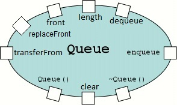
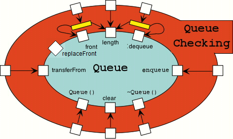

|
Checking Components - Overview |
Overview:
Example:
|
Queue |
display |
|
 The Component's Interface:
|
void display (preserves IQ& q)
Client must abide by:
|
|
Client Connection to Queue's Interface |
|
|
|
Queue Component Wrapped by QueueChecking Component |
|

|
|
Client Connection to Checked Queue's Interface |
|
Creating and Using:
Instance creation has to slightly altered in order to enjoy the benefits of checking components.
Visual Studio provides two configurations:
debug configuration - NDEBUG is not
automatically defined by using #define, the 'N' in NDEBUG stands for Not
debugging
release configuration - NDEBUG is
automatically defined
We can use the C Preprocessor #ifdef directive to test for NDEBUG
being defined.
If NDEBUG is not defined, then we can
provide declarations that make use of the checking components to wrap the
service providing components that we need to use.
If NDEBUG is defined, then we can
provide declarations that use the unwrapped/unchecked component
Example: instance creation that is unaware of debug/release configurations
| IntQue.h |
#pragma once |
Example: instance creation that is aware of debug/release configurations
| IntQue.h |
#pragma once |
Points to Notice about Example:
QueueChecking1 requires two template
parameters
1st template parameter:
Is any queue template that has the same public interface as the Queue1 template found in the 'components\include\Queue' folder.
2nd template parameter:
Is the type Item that is to be plugged into the queue template.
The checking component needs to know what type of item is being stored in the queue.